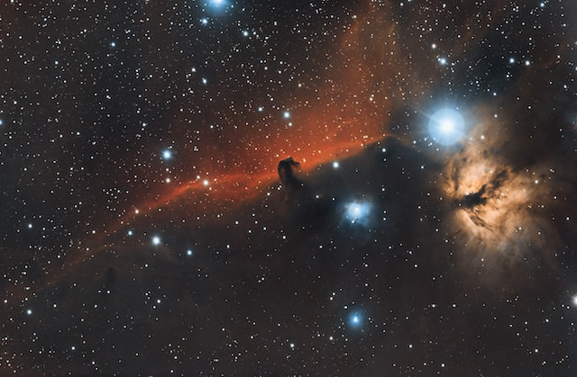
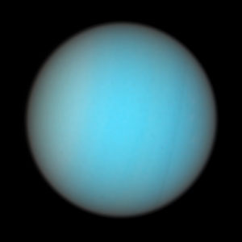

History
History Planets
Planets Missions
Missions Quiz
QuizThe Solar System
The Solar System is big.
It contains our star, known as the Sun, and everything that orbits it due to gravity.
This includes 8 planets and their moons, dwarf planets, asteroids, comets, and meteoriods.
Here are 6 interesting facts about Our Solar System:
1.
90% of Saturn's rings are made of water
2.
A day on Venus is longer than a year
3.
The Solar System is around 4.5 billion years old

4.
All the planets in the Solar System could fit between Earth ond the Moon


5.
Uranus spins at around 90 degrees to its orbit
6.
Spacecraft have visited every planet
Images on this page were sourced from:
esahubble.org
unsplash.com
freepik.com